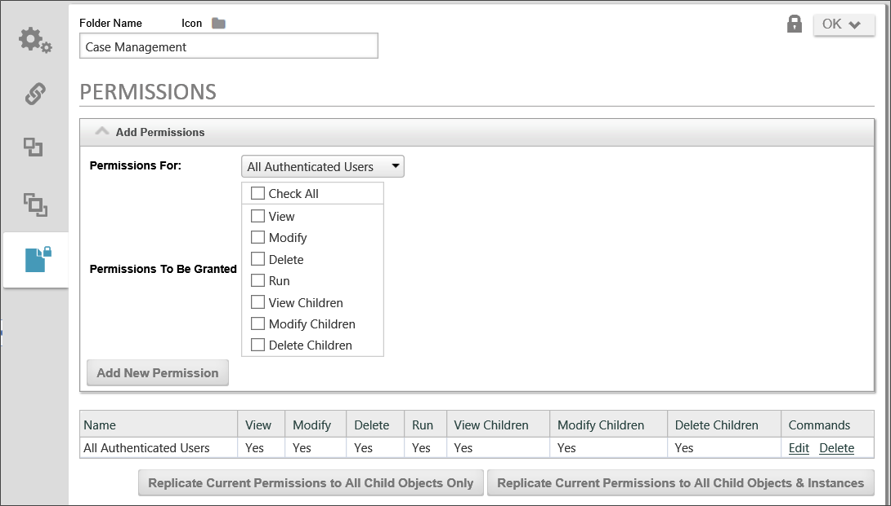

Any object in the Process Director database may contain a list of permission rules that determine who can access the object and what functions they can perform against it. A permission rule only grants a user access. The absence of a permission rule granting a user access to an object will automatically deny access to it. If there are conflicting rules which either grant or deny a user access, the user will be granted access. When the server attempts to determine whether a user has access to an object in the database, it will search through the object's entire permission list until it finds a permission rule that grants the user the requested access, or until the end of the list. The system will apply the highest level of access that has been granted to that user in the list of permissions.
Different object types in the database have different permissions and options available to them. Objects that can be run (e.g. process definition, Form definition) will have more permissions options available to them, as will objects that can have children objects (e.g. folders, Form definitions, etc.).

The Permissions list is displayed in the lower portion of the permissions screen and will display the user and group names sorted alphabetically.
Permissions are granted to a user. A permission record gives permission to something for a specific object in the Process Director database. Different types of user permissions can be granted.
An authenticated user is anyone who performs a login to access the system. Authenticated users have an identity (i.e. User ID) and exist in the Process Director database. They may be authenticated by Process Director, your Windows Domain, an LDAP server, or an external application.
This identifies a specific authenticated user by name. All users known to Process Director have a User ID that is used to login. They may also have an optional display name or Alias. If an Alias exists for a user, that name is used to identify the user on all Process Director screens. If a user appears multiple times in a permission list, they'll be granted access according to the highest level of permission listed.
A group is a collection of users in the Process Director database. A user can belong to multiple groups. Only authenticated users can belong to a group. When access to an object is being determined by the server, it will give the user the highest level of permission found in any specific user record or any group the user is a member of.
Anonymous users aren't authenticated. They don't perform a login and they have no identity in the Process Director database. Only certain functions and objects are available to anonymous users. If an “anonymous” permission is given to an object, authenticated users will automatically be given that same permission.
Any users who participate in a process as a task assignee receive the permissions for this class when they are accessing Process Director in the context of that process instance. At all other times, their permissions revert to the permissions of their group or user account.
This is a special permission type only available to objects that can have children (i.e. folders, process definitions, Form definitions). This will automatically give the permissions specified to the author/creator of any child objects that are created. For example, if a user starts a process definition that gives the Object Creator a permission of Modify; that will automatically be converted to the initiator users ID with Modify permission for that specific process instance the user is creating (starting).
For Process Director v6.1.400 and higher, when user permissions changes are applied, any affected user who is currently logged into an active session will be required to authenticate immediately, in order to apply the permissions changes to them.
Setting the permissions for a folder doesn't automatically set the permissions for the existing objects contained within it. You have the ability to replicate all permissions of the parent folder to all of the existing child objects in the folder. You have two options for doing so.
First, you can Replicate permissions to all child objects, which won't only overwrite the existing permissions on definition objects, it will also overwrite permissions on all of the form and process instances—including those instances that are active and in-progress. This may completely change the ability of users to complete active Process Timeline or Form instances, so you should exercise caution in using this option in the production environment.
You also have the option, though, to replicate the permissions to child all child objects except for form, process, and Process Timeline instances. This is probably the preferred option for replicating folder permissions in the production environment where there are active processes running. Future process and form instances will be created under the new permissions regime, but existing instances will still run under the permissions regime that was valid when they were created.
This permission gives a user read access to the folder. This doesn't grant the ability to modify the folder name or description. If a user only has View permission to a folder they won't be able to create any new objects below this folder.
This permission gives a user the ability to modify a folder, but not delete. A user with this permission to a folder can create new objects beneath this folder. A user must have Modify permission to view or set the permissions for the folder.
This permission allows a user to delete a folder. However, to delete a folder, the user must have Delete permission to all objects and sub-folders under this folder. If any object exists below this folder that the user doesn't have Delete permission to, the delete operation will be canceled and none of the objects will be deleted. A user must have Delete permission to be able to grant Delete permission to another user.
This permission gives a user the ability to view, read or download a document. This permission doesn't grant the ability to modify the document.
This permission gives a user the ability to modify the document. The document modifications will appear in the document history. A user must have Modify permission to view or set the permissions for a document.
This permission gives a user full control over a document. A user with this permission can delete the document. Delete permission is required for a user to perform a rollback to an older version of a document, or to delete any portion of the document history. A user must have Delete permission to be able to grant Delete permission to another user.
Permissions are defined for a process definition, e.g., a Process Timeline. When the process definition is run, a child is created as an instantiation of the process definition. This “running” process is located beneath the process definition in the Content List. This instantiated, running process will inherit the Child Permission settings from the process definition.
This permission gives a user the ability to view a process definition in the Content List. It doesn't grant the ability to run or modify the process definition, and doesn't grant any permission to the running processes instantiated from this definition.
This permission gives a user the ability to modify a process definition in the Content List. It doesn't grant the ability to run a process definition, and doesn't grant any permission to the running processes instantiated from this definition. A user must have Modify permission to view or set the permissions for a process definition.
This permission gives a user the ability to delete a process definition. This will also delete all running and completed process Instances beneath this process definition in the Content List. A user must have Delete permission to be able to grant Delete permission to another user.
This permission allows a user to run or start this process definition. If a user doesn't have Run permission to a process definition, it won't be displayed on their home page, nor will they be given access to the Run button for that object in the Content List.
This permission gives a user the ability to view the children of a process definition (e.g. running processes). When a process is started, the running process will copy all of the View Children permission rules as View permissions. If a user is granted View Children permission on the process definition, they'll be able to see all running and completed processes instantiated from the process definition. They will also be able to see the process definition in the Content List to enable the navigation to the running and completed process children. Users won't be view the actual process definition properties without View permission.
This permission gives a user the ability to modify the children of a process definition (e.g. running processes). When a process is started, the running process will copy all of the Modify Children permission rules as Modify permissions. If a user is granted Modify Children permission on the process definition, they'll be able to modify running processes instantiated from the process definition. This gives the user administrative control over the running process (e.g. add user, remove user, skip step, restart step, etc.).
This permission gives a user the ability to delete the children of a process definition (e.g. running processes). When a process is started, the running process will copy all of the Delete Children permission rules as Delete permissions. A user must have Delete permission to be able to grant Delete permission to another user.
Permissions are defined for a Form definition. When a Form is filled out and submitted, a child object is created as an instantiation of the completed Form. This completed form is located beneath the Form definition in the Content List. Completed forms will inherit the Child Permissions from the Form definition.
This permission gives a user the ability to view a Form definition in the Content List. It doesn't grant the ability to run or modify the Form definition, and doesn't grant any permission to the completed forms from this Form definition.
This permission gives a user the ability to modify a Form definition in the Content List. It doesn't grant the ability to fill out and submit a Form, and doesn't grant any permission to the completed forms. A user must have Modify permission to view or set the permissions for a Form definition.
This permission gives a user the ability to delete a Form definition. This will also delete all completed forms beneath this Form definition in the Content List. A user must have Delete permission to be able to grant Delete permission to another user.
This permission allows a user to fill out and submit this Form definition. If a user doesn't have Run permission to a Form definition, it won't be displayed on their home page and they won't be able to open it in the Content List.
This permission gives a user the ability to view the children of a Form definition (e.g. completed forms). When a Form is submitted, the completed form data creates an entry in the Content List and copies all of the View Children permission rules as View permissions. If a user is granted View Children permission on the Form definition, they'll be able to see the completed forms for this Form definition. They will also be able to see the Form definition in the Content List to enable the navigation to the completed form children. Users won't be able to view the actual Form definition properties without View permission.
This permission gives a user the ability to modify the children of a Form definition (e.g. completed forms). When a Form is submitted, the completed form will copy all of the Modify Children permission rules as Modify permissions. If a user is granted Modify Children permission on the Form definition, they'll be able to modify the completed forms under this Form definition.
This permission gives a user the ability to delete the children of a Form definition (e.g. completed forms). When a Form is submitted, the completed form will copy all of the Delete Children permission rules as Delete permissions. A user must have Delete permission to be able to grant Delete permission to another user.
Knowledge Views display objects contained in the Process Director database. Authenticated and anonymous users can be given access to the objects displayed in a Knowledge View. A user must have at least View permission to an object for it to be displayed in the Knowledge View.
This permission gives a user the ability to see the Knowledge View definition in the Content List. This permission doesn't grant the ability to run the Knowledge View.
This permission gives a user the ability to modify the Knowledge View definition in the Content List. A user must have Modify permission to view or set the permissions for a Knowledge View.
This permission allows a user to delete a Knowledge View definition. A user must have Delete permission to be able to grant Delete permission to another user.
This permission is required for a user to be able to run the Knowledge View. If a user doesn't have Run permission to a Knowledge View definition, it won't be displayed on the user’s home page or when they select the Knowledge navigation button.
The category permissions are set in the category schema. To view the category schema use the Administration navigation button and select Meta Data Administration.
This permission allows a user to view the category in the category schema. If a user doesn't have View permission to a category they won't see this category name in the schema definition.
This permission allows a user to view and modify the category in the category schema. It allows the user to add sub-categories below this category. A user must have Modify permission to view or set the permissions for a category.
This permission allows a user to delete the category in the category schema. It also allows the user to delete any sub-categories below this category. A user must have Delete permission to be able to grant Delete permission to another user.
This permission is required for a user to be able to assign the category to an object in the database.
Any time a new object (e.g. document, Review Set, sub-folder) is added to a folder it will be given the same permissions as the parent folder. If an object is added to the top-most folder (i.e. “<top>”) it will be given the same permissions specified in the default Folder Permissions hotlink. If an object is copied or moved to a folder, it will keep its original permissions.
Any user that is checked as the “System Administrator” is given full administrative privileges. A user that is a System Administrator has full permission (View, Modify, and Delete) to all objects in the Process Director database.
Permission records can be modified for an object by selecting the Permissions button. Each permission record has to be removed or added individually. Existing permission records can't be modified, they must be removed and a new record added. To remove a permission record, click on the checkbox for that entry and select the Delete hotlink. To add a new permission record, select the type of user, the type of permission and click on the “Add New Permission” button. You can't delete a permission record that would eliminate Write permission for yourself; the system will return an error message. If this occurs, add a new permission record granting your User ID Write permission, then delete the other permission record.